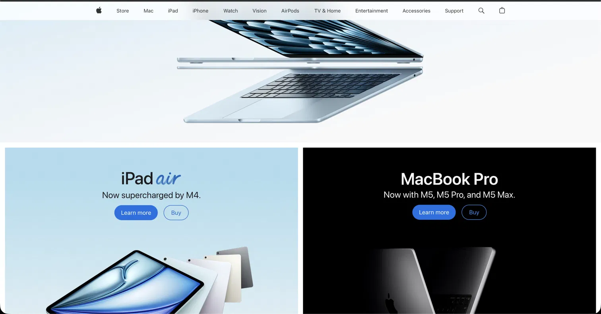
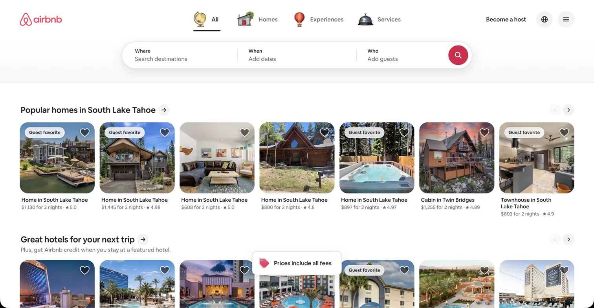
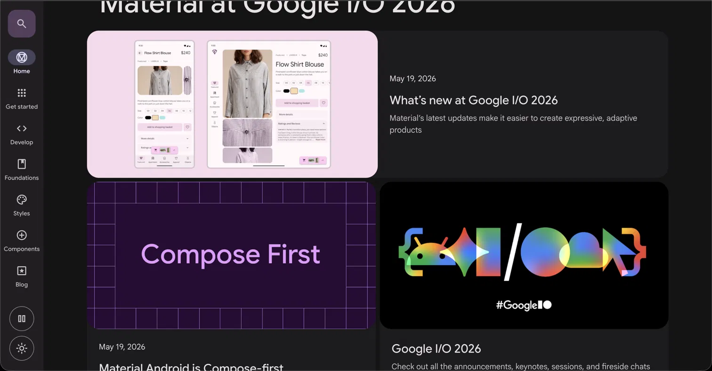
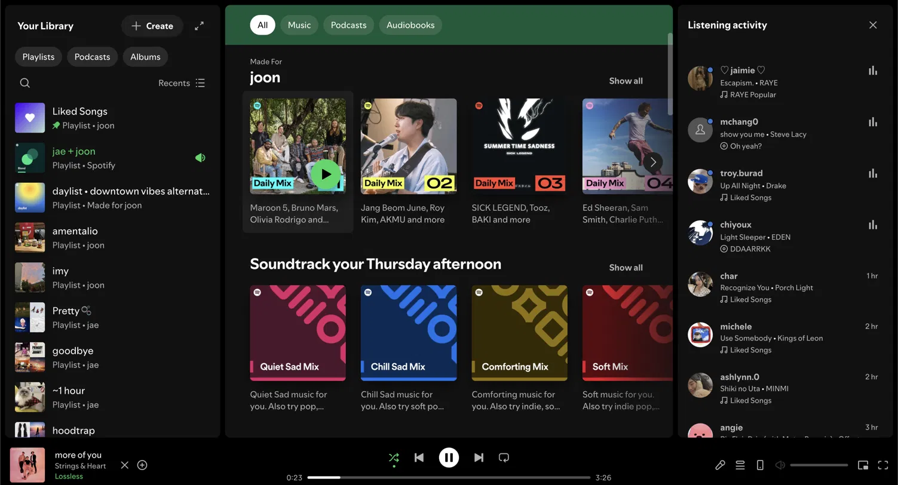

Design I Homework
Analyzing Web Design Principles: Contrast, Repetition, Alignment, and Proximity
1. Contrast: Apple.com
Visit Apple.com

Why This Site Exemplifies Contrast:
Apple's website is a masterclass in using contrast effectively. The design uses stark black backgrounds, pure white text, and bold pops of color (typically vibrant product colors) to create visual hierarchy and draw attention exactly where Apple wants it.
Key Contrast Elements:
- High contrast between dark backgrounds and light text ensures readability
- Product images stand out dramatically against minimalist backgrounds
- Color contrast guides the viewer's eye to call-to-action buttons
- Dark navigation bar creates separation from main content area
2. Repetition: Airbnb.com
Visit Airbnb.com

Why This Site Exemplifies Repetition:
Airbnb uses consistent, repeating design patterns throughout its interface. The grid of property cards repeats endlessly, creating visual unity and allowing users to scan easily through listings. The consistent spacing, typography, and card design reinforce the brand identity.
Repetition Strategy Breakdown:
- Card-based layout repeats across search results, creating predictability
- Consistent typography hierarchy throughout entire site
- Repeated use of rounded corners in components
- Icon styles and colors remain consistent across all sections
- Navigation elements repeat in header and footer areas
3. Alignment: Google Material Design (Material.io)
Visit Material.io

Why This Site Exemplifies Alignment:
Google's Material Design documentation site demonstrates perfect grid-based alignment. Every element follows an invisible 8-point grid system, ensuring that all content, images, text, and buttons align precisely. This creates a sense of order and professionalism that's essential for a design system documentation site.
Alignment Techniques Used:
- Left Alignment
- Body text and content blocks align to a consistent left margin, creating a clean vertical edge that guides the eye down the page.
- Center Alignment
- Headlines and hero images are center-aligned to create visual emphasis and draw attention to key messages and featured content.
- Grid System
- All elements snap to an invisible grid, ensuring mathematical precision in spacing, margins, and element placement throughout the site.
- Justified Alignment
- Multi-column layouts use edge-to-edge alignment to create a structured, newspaper-like appearance that feels organized and professional.
4. Proximity: Spotify.com
Visit Spotify.com

Why This Site Exemplifies Proximity:
Spotify's website effectively groups related information together and uses white space to separate different content zones. Related playlist recommendations are clustered together, user account information is grouped separately, and navigation elements are proximally organized by function and importance.
How Proximity Creates Organization:
- Playlist recommendations grouped in "cards" that feel like unified objects
- Related social features (Follow, Share) placed close together
- User profile information consolidated in a single sidebar area
- Category sections separated by white space to distinguish different content types
- Links related to a single action are proximal to that action's button
Summary: All Four Principles Working Together
The Best Web Designs Don't Use Just One Principle—They Use All Four Together:
While each website above was selected to showcase one principle, they all employ all four principles in harmony:
- Apple uses contrast (most prominent), but also repeats its minimalist style, aligns all elements to a grid, and groups related products in proximity
- Airbnb uses repetition (most prominent), but creates contrast through highlighting featured listings, aligns cards in a grid, and uses proximity to group reviews with property information
- Material Design uses alignment (most prominent), but creates contrast between sections, repeats visual patterns, and uses proximity to group related documentation
- Spotify uses proximity (most prominent), but creates contrast between active and inactive elements, repeats playlist card designs, and aligns everything to a structured grid
This homework demonstrates how understanding these four fundamental design principles is essential for creating professional, user-friendly websites that guide viewers' attention and create visual harmony.
Bonus: Screenshots included for extra credit!